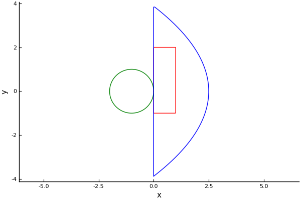

Shapes
Shape is an abstract type which represents the shape of particles, and also the regions where particles are placed or where fields are calculated. See Shape for a list of relevant types and functions.
Existing shapes
| Shape | Description |
|---|---|
Sphere | A circle in 2D and a sphere in 3D. Circle(radius) and Sphere(radius) are short for a circle or sphere at the origin. |
Box | A rectangle in 2D and a box in 3D, with sides parallel to the axes. Rectangle(bottomleft, topright) also creates a 2D box. |
Halfspace | All points behind a plane, defined by its outward normal and a point on the plane. |
Plate | All points between two parallel planes. |
Polygon | A 2D polygon defined by its vertices. |
IsotropicHelmholtz, Helmholtz | 2D Helmholtz resonators: a circular wall with an opening (aperture). |
TimeOfFlightPlaneWaveToPoint, TimeOfFlightPointWaveToPoint | Regions which contain all particles that can be reached by a wave, and then scatter back to a listener, within a given time. |
EmptyShape | A shape with no points. |
For example:
julia> circle = Sphere([-1.0, 0.0], 1.0) # origin and radius
Sphere{Float64, 2}([-1.0, 0.0], 1.0)
julia> rectangle = Box([[0.0, -1.0], [1.0, 2.0]]) # the smallest box which contains these points
Box{Float64, 2}([0.5, 0.5], [1.0, 3.0])
julia> name(circle), name(rectangle)
("Circle", "Rectangle")You can plot shapes by using:
using Plots;
timeofflight = TimeOfFlightPlaneWaveToPoint([1.0, 0.0], 3.0)
plot(rectangle, linecolor = :red)
plot!(circle, linecolor = :green)
plot!(timeofflight, linecolor = :blue)
The Box and TimeOfFlightPlaneWaveToPoint are usually regions where particles are placed. The time of flight shape contains all particles, from a halfspace, which can be reached by a plane wave and then scatter back to the listener at most a time t later. The Sphere is also used to define circular or spherical particles.
Working with shapes
Check if a point is inside a shape, or if a shape is inside another shape:
julia> [0.5, 0.5] ∈ rectangle
true
julia> Sphere([0.5, 0.5], 0.4) ⊆ rectangle
true
julia> circle ⊆ rectangle
falseCalculate the size of shapes:
julia> volume(rectangle) # the area in 2D
3.0
julia> outer_radius(rectangle) # the radius of the smallest circle, around the origin, which contains the shape
1.5811388300841898
julia> bounding_box(circle) # the smallest box which contains the shape
Box{Float64, 2}([-1.0, 0.0], [2.0, 2.0])Shapes which are the same, except for their origin, are congruent. Particles which are congruent have the same T-matrix, which saves time in simulations.
julia> circle2 = congruent(circle, [4.0, 4.0]) # the same shape but with origin [4.0, 4.0]
Sphere{Float64, 2}([4.0, 4.0], 1.0)
julia> iscongruent(circle, circle2) # can also be written as circle ≅ circle2
trueOther useful functions include boundary_points, which returns points on the boundary of a shape, and points_in_shape, which returns a grid of points inside a shape.
New shapes
To define a new shape see New particles.